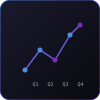

استخدم بياناتك لتوقع ما قد يحدث بعد ذلك واتخاذ قرارات استباقية.
تساعد التحليلات التنبؤية في BTS المؤسسات على استخدام بياناتها لتوقع ما قد يحدث بعد ذلك. بدلاً من مراجعة الأداء السابق فقط، تبني BTS أنظمة تحليلات تنبؤية تعمل بالذكاء الاصطناعي لتحديد الأنماط والتنبؤ بالنتائج ودعم اتخاذ القرارات الاستباقية.
تساعد BTS المؤسسات على فهم المخاطر والفرص والطلب والاتجاهات التشغيلية قبل أن تصبح مشاكل عاجلة. تقوم BTS بتحويل بيانات الأعمال إلى رؤى تنبؤية تدعم التخطيط الأفضل والقرارات الأذكى.
المؤسسات التي ترغب في الانتقال من التقارير التفاعلية إلى اتخاذ القرارات الاستباقية المدعومة بالذكاء الاصطناعي.
تساعد BTS المؤسسات على تحويل بيانات الأعمال إلى رؤى تنبؤية لتخطيط أفضل.
← العودة إلى الرئيسية ابدأ مشروعك ←